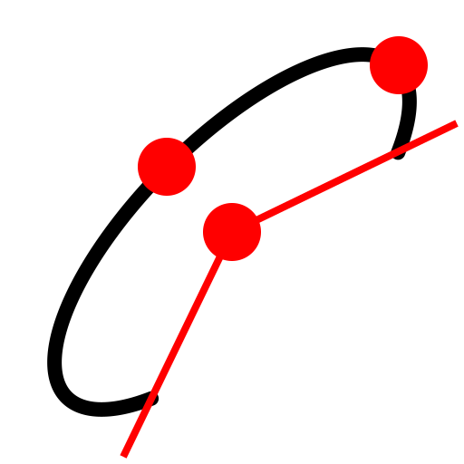

Ellipse Arc
Toolbar / Icon:


Menu: Draw > Ellipse > Ellipse Arc
Shortcut: E, A
Commands: ellipsearc | ea
Description:
Draws ellipse arcs with a given center, major and minor axis and start and
end angles.
Procedure:
- Set the center of the ellipse using the mouse or enter a coordinate in
the command line.
- Define the major axis by clicking the endpoint of the axis, which is a
point on the ellipse. You can also enter a coordinate into the command line
or enter an angle and major radius in the format
@50<30 where 50 is the major radius and 30 is the ellipse
angle.
- Define the endpoint of the minor axis which is also a point on the
ellipse or enter the length of the minor axis.
- Set the start angle with the mouse or by entering a coordinate or the
angle amount in the command line.
- Set the end angle the same way as the start angle.